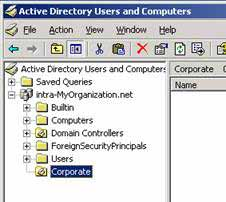
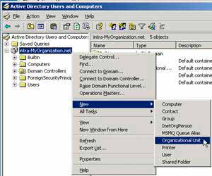

Основы управления доменом Active Directory
Ряд средств в оснастках Microsoft Management Console (MMC) упрощает работу с Active Directory.
Оснастка Active Directory Users and Computers (Active Directory – пользователи и компьютеры) является консолью управления MMC, которую можно использовать для администрирования и публикации сведений в каталоге. Это главное средство администрирования Active Directory, которое используется для выполнения всех задач, связанных с пользователями, группами и компьютерами, а также для управления организационными подразделениями. Для запуска оснастки Active Directory Users and Computers (Active Directory – пользователи и компьютеры) выберите одноименную команду в меню Administrative Tools (Администрирование).

Active Directory Users and Computers
По умолчанию консоль Active Directory Users and Computers работает с доменом, к которому относится Ваш компьютер. Вы можете получить доступ к объектам компьютеров и пользователей в этом домене через дерево консоли или подключиться к другому домену. Средства этой же консоли позволяют просматривать дополнительные параметры объектов и осуществлять их поиск.
Получив доступ к домену вы увидите стандартный набор папок:
- Saved Queries (Сохраненныезапросы) – сохраненные критерии поиска, позволяющие оперативно повторить выполненный ранее поиск в Active Directory;
- Builtin – список встроенных учетных записей пользователей;
- Computers – контейнер по умолчанию для учетных записей компьютеров;
- Domain Controllers – контейнер по умолчанию для контроллеров домена;
- ForeignSecurityPrincipals – содержит информацию об объектах из доверенного внешнего домена. Обычно эти объекты создаются при добавлении в группу текущего домена объекта из внешнего домена;
- Users – контейнер по умолчанию для пользователей.
Некоторые папки консоли по умолчанию не отображаются. Чтобы вывести их на экран, выберите в меню View (Вид) команду Advanced Features (Дополнительные функции). Вот эти дополнительные папки:
- LostAndFound – потерявшие владельца, объекты каталога;
- NTDS Quotas – данные о квотировании службы каталогов;
- Program Data – сохраненные в службе каталогов данные для приложений Microsoft;
- System – встроенные параметры системы.
Вы можете самостоятельно добавлять папки для организационных подразделений в дерево AD.

Рассмотрим пример создания учётной записи пользователя домена. Чтобы создать учётную запись пользователя щелкните правой кнопкой контейнер, в который вы хотите поместить учетную запись пользователя, выберите в контекстном меню New (Создать), а затем – User (Пользователь). Откроется окно мастера New Object – User (Новый объект – Пользователь):
- Введите имя, инициал и фамилию пользователя в соответствующих полях. Эти данные потребуются для создания отображаемого имени пользователя.
- Отредактируйте полное имя. Оно должно быть уникальным в домене и иметь длину не более 64 символов.
- Введите имя для входа. С помощью раскрывающегося списка выберите домен, с которым будет связана учетная запись.
- При необходимости измените имя пользователя для входа в системы с ОС Windows NT 4.0 или более ранними версиями. По умолчанию в качестве имени для входа в системы с предыдущими версиями Windows используются первые 20 символов полного имени пользователя. Это имя также должно быть уникальным в домене.
- Щёлкните Next (Далее). Укажите пароль для пользователя. Его параметры должны соответствовать вашей политике паролей;
Confirm Password (Подтверждение) – поле, используемое для подтверждения правильности введенного пароля;
User must change password at next logon (Требовать смену пароля при следующем входе в систему) – если этот флажок установлен, пользователю придется изменить пароль при следующем входе в систему;
User cannot change password (Запретить смену пароля пользователем) – если этот флажок установлен, пользователь не может изменить пароль;
Password never expires (Срок действия пароля не ограничен) – если этот флажок установлен, время действия пароля для этой учетной записи не ограничено (этот параметр перекрывает доменную политику учетных записей);
Account is disabled (Отключить учетную запись) – если этот флажок установлен, учетная запись не действует (параметр удобен для временного запрета использования кем-либо этой учетной записи).
Учётные записи позволяют хранить контактную информацию пользователей, а так же информацию об участии в различных доменных группах, путь к профилю, сценарий входа, путь домашней папки, список компьютеров, с которых пользователю разрешён вход в домен и т.д.
Сценарии входа определяют команды, выполняемые при каждом входе в систему. Они позволяют настроить системное время, сетевые принтеры, пути к сетевым дискам и т.д. Сценарии применяются для разового запуска команд, при этом параметры среды, задаваемые сценариями, не сохраняются для последующего использования. Сценариями входа могут быть файлы сервера сценариев Windows с расширениями .VBS, .JS и другие, пакетные файлы с расширением .ВАТ, командные файлы с расширением .CMD, программы с расширением .ЕХЕ.
Можно назначить каждой учетной записи свою домашнюю папку для хранения и восстановления файлов пользователя. Большинство приложений по умолчанию открывают домашнюю папку для операций открытия и сохранения файлов, что упрощает пользователям поиск своих данных. В командной строке домашняя папка является начальным текущим каталогом. Домашняя папка может располагаться как на локальном жестком диске пользователя, так и на общедоступном сетевом диске.
К доменным учётным записям компьютеров и пользователей могут применяться групповые политики. Групповая политика упрощает администрирование, предоставляя администраторам централизованный контроль над привилегиями, разрешениями и возможностями пользователей и компьютеров. Групповая политика позволяет:
- создавать централизованно управляемые специальные папки, например My Documents (Мои документы);
- управлять доступом к компонентам Windows, системным и сетевым ресурсам, инструментам панели управления, рабочему столу и меню Start (Пуск);
- настроить сценарии пользователей и компьютеров на выполнение задачи в заданное время;
- настраивать политики паролей и блокировки учетных записей, аудита, присвоения пользовательских прав и безопасности.
Помимо задач управления пользовательскими учётными записями и группами существует масса других задач управления доменом. Для этого служат другие оснастки и приложения.
Оснастка Active Directory Domains and Trusts (Active Directory – домены и доверие) служит для работы с доменами, деревьями доменов и лесами доменов.
Оснастка Active Directory Sites and Services (Active Directory – сайты и службы) позволяет управлять сайтами и подсетями, а так же межсайтовой репликацией.
Для управления объектами AD существуют средства командной строки, которые позволяют осуществлять широкий спектр административных задач:
- Dsadd – добавляет в Active Directory компьютеры, контакты, группы, организационные подразделения и пользователей. Для получения справочной информации введите dsadd /?, например dsadd computer/?
- Dsmod – изменяет свойства компьютеров, контактов, групп, организационных подразделений, пользователей и серверов, зарегистрированных в Active Directory. Для получения справочной информации введите dsmod /?, например dsmod server /?
- Dsmove – перемещает одиночный объект в новое расположение в пределах домена или переименовывает объект без перемещения.
- Dsget – отображает свойства компьютеров, контактов, групп, организационных подразделений, пользователей, сайтов, подсетей и серверов, зарегистрированных в Active Directory. Для получения справочной информации введите dsget /?, например dsget subnet /?
- Dsquery – осуществляет поиск компьютеров, контактов, групп, организационных подразделений, пользователей, сайтов, подсетей и серверов в Active Directory по заданным критериям.
- Dsrm – удаляет объект из Active Directory.
- Ntdsutil – позволяет просматривать информацию о сайте, домене или сервере, управлять хозяевами операций (operations masters) и обслуживать базу данных Active Directory.
Так же существуют средства поддержки Active Directory:
- Ldp – Осуществляет в Active Directory Administration операции по протоколу LDAP.
- Replmon – Управляет репликацией и отображает ее результаты в графическом интерфейсе.
- Dsacls – Управляет списками ACL (списками управления доступом) для объектов Active Directory.
- Dfsutil – Управляет распределенной файловой системой (Distributed File System, DFS) и отображает сведения о её работе.
- Dnscmd – Управляет свойствами серверов, зон и записей ресурсов DNS.
- Movetree – Перемещает объекты из одного домена в другой.
- Repadmin – Управляет репликацией и отображает её результаты в окне командной строки.
- Sdcbeck – Анализирует распространение, репликацию и наследование списков управления доступом.
- Sidwalker – Задает списки управления доступом для объектов, в прошлом принадлежавших перемещенным, удаленным или потерянным учетным записям.
- Netdom – Позволяет управлять доменами и доверительными отношениями из командной строки.
Более подробные материалы по организации доменов можно найти в соответствующей литературе.